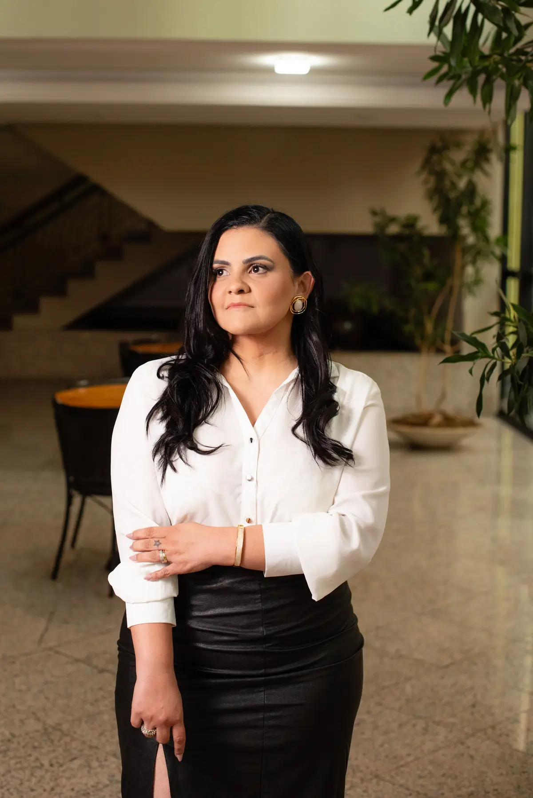
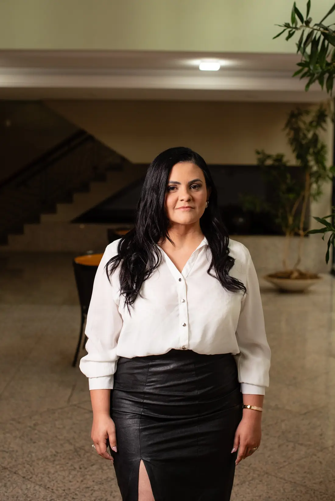

Fé e família
Defesa dos valores cristãos e da família como base da sociedade.
01

Roberta Lopes — Deputada Estadual de Minas Gerais

7.924 votos.
63.840 votos.
Defesa dos valores cristãos e da família como base da sociedade.
Defesa da vida desde a concepção, apoio às mães e transparência na rede pública.
Escolas mais seguras e combate à criminalidade.
Ensino de qualidade, valorização dos professores e liberdade no ambiente escolar.
Emendas, infraestrutura, desenvolvimento e investimentos nos municípios da região.
Projetos de lei, requerimentos, discursos, votações, comissões, audiências e proposições — o trabalho parlamentar, aberto e acompanhável.
Roberta é a representante da Zona da Mata na Assembleia Legislativa: emendas, infraestrutura, desenvolvimento e investimentos nos municípios da região.
Parceiros políticos pela região: mais de R$ 120 milhões investidos por Nikolas Ferreira na Zona da Mata.
Informação apresentada no site anterior de Roberta Lopes. Valor sujeito a conferência e atualização pela equipe do mandato.
Clique nos municípios destacados para ver recursos, projetos, ações e resultados.
Acompanhe, participe e fiscalize o trabalho da sua Deputada.